Newfiles Documentation
What is Newfiles?
Newfiles is a command-line tool to help build new projects from existing templates, instead of from scratch. It can be used on either Windows or Mac.
You can create templates for virtually any type of project. Newfiles is completely platform agnostic; it's not geared towards any one type of code Nor any one type of platform. You are only limited by your imagination, when it comes to creating templates.
Newfiles will generate your new project based on the rules you defined in your reusable template, such as...
- What files and folders get created?
- What are their file/folder names?
- What file/folder names are always the same? Which names are variable for each project?
- Which text content is variable for each project?
- Which casing (uppercase, lowercase, normalcase, or capitalized) format should variable text content have in different spots?
Define these rules using simple-to-grasp, platform-agnostic token-based markup, inside your template files: Newfiles follows your template's instructions so you retain full ownership and control over what gets put into your project files.
Do you have a working project that contains reusable content? Turn it into a template.
Auto-generate your boilterplate project. Reduce your setup time. Start working on core-functionality sooner.
Installation
If you don't already have Newfiles working on your computer, click the link below:
How do you know if Newfiles is already installed? Start your command prompt (Windows) or shell (Mac) and type the command, nf. If you see a list of "nf" commands, then you know Newfiles is already installed and working.
My First Template
What is the templates folder?
During installation, you defined your Newfiles templates folder. This is where all templates are stored. Let's create a new template in that folder.
If you don't remember where the templates folder is located, just type the command, nf templates to open it:

Try it yourself. Can you run the nf templates command?
Create the template
This will be the most simple template ever and utterly useless, but it will be a good way to start wrapping your head around Newfiles.
Inside the templates folder
- Create a sub-folder called "MyFirstTemplate"
- Create a file, inside "MyFirstTemplate", called "afile.txt"
- Inside "afile.txt", write some content: "My favorite color is blue"
My favorite color is blue
Tah dah. You have created your first template. It's that easy.
Now, you will create a project based on this simple template. Where do you want to create this project? In your command-line console, change your current directory to where you want to create your project. You can put your project anywhere, but I will create a new directory called "myprojects" to use as an example:
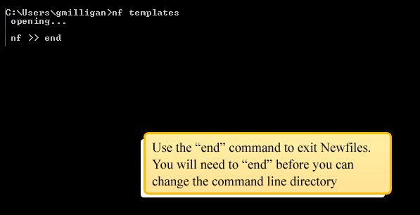
Now, type the command, nf ls to make sure that Newfiles can see your new template in the console. "MyFirstTemplate" should be listed.
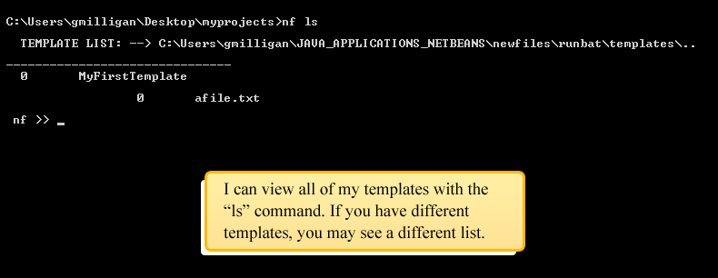
Note the index number to the left of "MyFirstTemplate". This template index allows you to select your template. Your index may be different if your template library includes different templates.
Build a Project
Now, you will build a new project based on your "MyFirstTemplate" template
The command to use a template, to build a new project, is nf use {template-index}. In this example, the "MyFirstTemplate" template's index is 0 so I'll type use 0 to use this template:
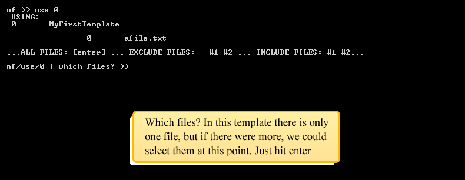
Great. What just happened? A new project, based on our mind-numbingly simple template, was created:
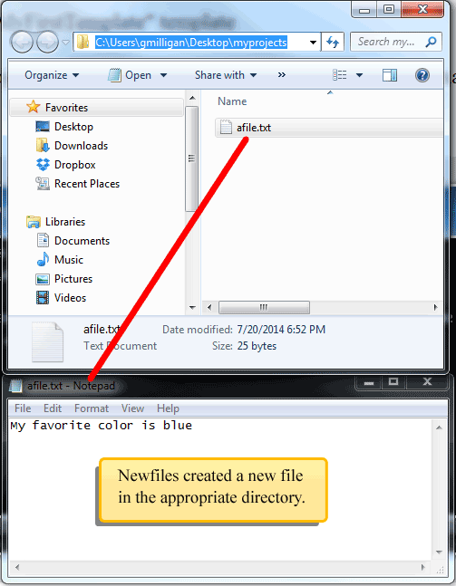
So what? For this example, it would have been easier to create this file by hand. True. This example was over-simplified to introduce you to some basic Newfiles commands. However, Newfiles becomes useful for more complicated templates, especially when it takes advantage of using tokens. You will learn about tokens in the next section.
Checkpoint -- What you learned:
- What is the templates folder?
- What is a shortcut command to open the templates folder from the command line?
- How do you create a new template?
- What command will show you a list of your templates?
- What commands will use a template to build a new project?
My First Token
What is a token?
A token is a placeholder. For example, if you've ever had to fill out a legal form, you may have had to sign your name on a "dotted" line. In this example, the blank line is a placeholder for your name.
Tokens are similar to blank lines in a legal document: Much of a template is "hard-coded", but you fill-in token values on-the-fly when you create your project.
When you write a template, you can decide where to position tokens that represent variable content.
Write your first token
Now that you understand what a token is, how could you make "MyFirstTemplate" better by including a token?
My favorite color is blue
Right now, "MyFirstTemplate" isn't very useful; what if you need to create a new project that says "My favorite color is red", or "green" or "lavender"... etc?
Different projects may all share pieces that are the same, but they also have parts that are unique.
We want our template to fill in the content that's always the same, (to save time) but we also want our template to let us fill in unique value(s) that vary in different projects. To accomplish this, let's write our first token:
My favorite color is var:l:my favorite color
Go ahead, add the token, var:l:my favorite color to "afile.txt".
With our new token, let's see what happens now when we nf use "MyFirstTemplate":
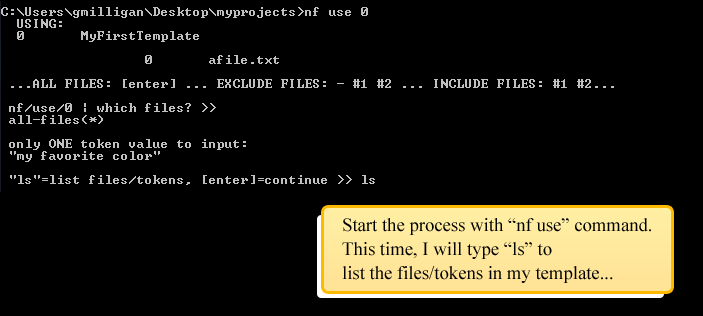
What just happened? Here is a review of the commands we used:
- nf use 0... 0 is our template index. We chose which template to use.
- 1/1) Enter --> "my favorite color" >> GREEN... we chose what value to use for the "my favorite color" token. Remember, a token is just a placeholder for a value. Our token, var:l:my favorite color is a placeholder in the template. In this example, I entered the value, "GREEN".
Great. What does the project look like? Take a look at the new afile.txt file. We will see that our token has been replaced by our value:
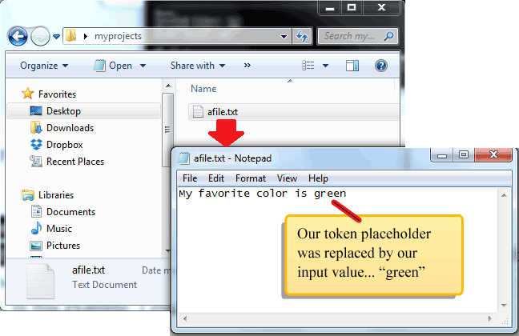
You may notice something strange... I entered uppercase "GREEN" into the command-line but in my project, the value is lowercase "green". Why?
Tokens can control casing
You can use tokens to determine the casing of input values. Look again at the token from the example: var:l:my favorite color
This token contains three parts that are separated by a colon, ':'. The second part may look like the number one, but it's actually a lowercase letter 'l'.
This lowercase letter 'l' stands for lowercase. It will transform any input value into all lowercase letters. The second token-part will always control the letter casing of input values.
So, if you used a different letter, it would modify the input casing a different way:
- l: all lowercase letters
- u: all UPPERCASE letters
- c: Capitalize the first letter... leave the other letters alone.
- n: all letters will be left alone (normal-casing)
The parts of a token
Now you know that tokens are made up of different colon-separated "parts". Now you'll learn what those parts are:
var:l:my favorite color
- Type: The first part of a token is always the token-type. In this example, the type is "var", which stands for "variable".
- Casing: The second part of a token is always the token-casing. In this example, the casing is "lowercase".
- Name: The last part of a token is always the token-name. Note, this part is always last, but it's not always third. In this example, the name is "my favorite color".
The token name is what you will see when you are asked to enter a value in the command line, eg: 1/1) Enter --> "my favorite color" >> .
Using the same token name in different spots
If my template used the token, var:l:my favorite color multiple times, I would STILL only have to enter "my favorite color" ONE time in the command line; multiple tokens, with the same name, are the same token.
To illustrate this, consider this template:
My favorite color is var:l:my favorite color.
I SAID IT IS var:u:my favorite color!
Now let's say I build a project with the following input:
1/1) Enter --> "my favorite color" >> rEd
My resulting project file would look like this:
My favorite color is red.
I SAID IT IS RED!
Although I only had to enter "rEd" one time, my value replaced each token that had the "my favorite color" name. Also note, you are able to set different casing for the same value in different spots, ie: "red" and "RED".
Checkpoint -- What you learned:
- What is a token and how is it useful inside a template?
- How do you use a token when building a project?
- How can you review what tokens are present, inside a template, when you are building a project in the command line?
- How will Newfiles handle building a project if one or more of the project files already exist?
- What are the different parts of a token?
- How do you control casing for input values?
More "var" token-type examples
More than one token name
So far we've only seen a template that uses ONE token name, "my favorite color". However, it's possible to create templates that have many different token names.
For this example, I'll create a new template called "VarTokenExamples". It will contain one file called "examples.html":
Hi var:c:your name,
What's your favorite color?
Oh, it's var:l:favorite color?
That's a very var:n:adjective choice, var:c:your name!
Try this example for yourself:
- Open your command-line console.
- Open your templates folder with the shortcut command, nf templates
- In the templates folder, create a new file-system folder called "VarTokenExamples"
- Now, in the command-line use nf ls to list your templates.
- Notice that "VarTokenExamples" is NOT in the list... this is because "VarTokenExamples" does NOT yet contain at least one file.
- In order for "VarTokenExamples" to be considered a template, you must add at least one file directly under this folder. Go ahead and add the "examples.html" file. Once this file is under "VarTokenExamples", try the nf ls command again to see that your new template is now showing up in the list.
- Copy the example file content into "examples.html", if you haven't already.
Once you created the new "VarTokenExamples" template, let's use it to create a new project:
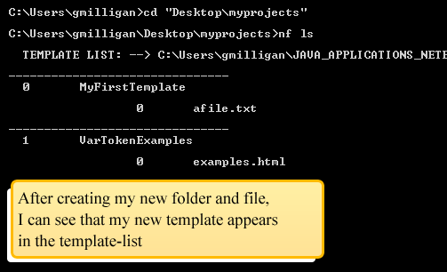
Enter different token-values, if you wish then check to see what project content gets created.
Using token "aliases"
When you define a token once, is there a way to reuse the token without having to write the full syntax over-and-over again? Rewriting the full thing multiple times can get tedius and look cluttered. For example, my template uses var:c:your name in two spots... can I define type, casing, and name once, then reuse the repeated token definition multiple times?
Hi var:c:your name,
What's your favorite color?
Oh, it's var:l:favorite color?
That's a very var:n:adjective choice, var:c:your name!
Also, what if I wanted to be able to change the casing for "your name" in the file? I would have to change it in both tokens. There has to be a more efficient way to write repeating tokens... there is; you can create a token alias, which would look like this:
var:c:your name => [Name]
Hi [Name],
What's your favorite color?
Oh, it's var:l:favorite color?
That's a very var:n:adjective choice, [Name]!
In this example, we have a token definition, var:c:your name => [Name]. We assigned this token defintion to an alias, [Name] so that, instead of writing the full token multiple times, we could use the alias as a placeholder, instead. This makes the template easier to read and allows you to update the casing and token name in one spot for multiple aliases.
We could also have used aliases for our other two tokens too, but since they only appear once, there is less incentive to create an alias for them. It's up to you if you want to create aliases for all var tokens, but you don't have to.
What are the key syntax rules for aliases?
- Not all token types can use aliases, but the "var" token type can use aliases.
- Define an alias with the symbol, => to the right of the token name
- In the previous example, brackets around the alias have no significance other than to make the alias more readable... brackets are NOT required. I could have used anything as my alias, like (Name) or nombre or event foO. Most anything after the => would work as an alias.
- Capitalization matters! If you have two aliases with different capitalization, then they are considered different aliases. Notice in the example I spelled Name with a capital first letter. I prefer to match the token's casing rule with the casing of the alias for readability; you may have two tokens with the same name but different casings. If you use this convention, it's easy to remember the casing applied to the token by looking at the casing of the alias.
Another way to write the previous example template with aliases (based on personal preference) is as follows. This template will yield the same result, as the previous example, when creating projects. The difference is only in the way the tokens/aliases are written:
var:c:your name => [Name]
var:l:favorite color => (color)
var:n:adjective => |adj|
Hi [Name],
What's your favorite color?
Oh, it's (color)?
That's a very |adj| choice, [Name]!
Using token aliases can help make your template cleaner and easier to read.
More than one template file
So far we've only created and used templates with one file. However, in the real world, projects usually contain multiple files. Let's add another file to our template, "VarTokenExamples" so we can study how tokens behave in templates with more than one file:
var:c:your name => Name
var:l:favorite color => colour
var:n:adjective => -ad-
var:n:disliked color => (color)
Hi again Name,
So you want to see more examples?
You told me your favorite color was colour.
I still think that choice is -ad-.
Yay.
My favorite color is (color)... oh you don't like it too?
Here's a href="examples.html"proof of our previous exchange/a.
After I create this new template file, I will re-build my project:
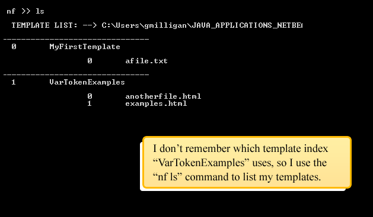
Note the token aliases that were used between the two template files...
This demonstration reveals some key details about the scope of token aliases, compared to token names, across multiple template files.
Token scope / alias scope
The last demonstration used one template, "VarTokenExamples", that has two template files, "examples.html" and "anotherfile.html", to create a project. Both template files contain tokens and token aliases:
examples.html:
- var:c:your name => [Name]
- var:l:favorite color => (color)
- var:n:adjective => |adj|
anotherfile.html:
- var:c:your name => Name
The "your name" token uses "Name" as its alias instead of "[Name]"... the scope of an alias is limited to the file in which it is defined; this file has no knowledge of the "[Name]" alias defined in "examples.html". Instead, this file uses "Name" as the alias for this token.
- var:l:favorite color => colour
- var:n:adjective => -ad-
- var:n:disliked color => (color) The "(color)" alias is used in both files... but for different token names. This is allowed because the scope of an alias is limited to the file in which it is defined.
Token names, including "your name", will all represent the same value inside the template. However, token aliases, including "[Name]", will only represent the token name in the file in which the alias is defined. A single token name means the same thing in multiple token files... although a token alias only retains its meaning within a single file; if you want to use the same token alias in different files, then you must define the token alias again in each file.
Checkpoint -- What you learned:
- If your templates folder contains an empty folder, then is this folder considered a template? What would you have to do to make your empty folder a listed Newfiles template?
- What are token "aliases" and how do they make templates easier to read / maintain?
- Will token names represent the same value when they are used in different template files?
- If you define a token alias in one file, will the token alias automatically represent the same token name in ALL of the template's files?
- Consider this token definition: var:c:project name => [Project]. If you use the lowercase token alias, [project] in the same file, will the alias represent the "project name" input value? Why not?
Controlling project file names and folders
Introducing the "filename" token-type
So far, all of our templates lack influence over the location or names of project files. In the real world, you may want to create projects that have different file/folder structure. This structure may change depending on the new project you want to create.
Similar to creating value-placeholders with var tokens, Newfiles lets you create placeholders for both filenames and folder paths with the filename token type:
Here are some examples of the "filename" type's syntax:
- filename:l:"my-file-name" changes the project file's name to lowercase "my-file-name".
- filename:u:my-file-name asks you to enter a value for the project's file name in the command line. Whatever you enter will be transformed to uppercase.
- filename:n:. keeps the file name the same as whatever it is inside the template.
Those three filename examples only control a project's file name. What does the token look like if you want to change the file path? Here are some examples:
- filename:l:new/file/path:"my-file-name" changes the project file's name to lowercase "my-file-name". This file will be placed in a new path, "new/file/path", starting at the root of wherever you build your project.
- filename:u:some/path:my-file-name asks you to enter a value for the project's file name in the command line. Whatever you enter will be transformed to uppercase. This file will be placed in a new path, "some/path", starting at the root of wherever you build your project.
- filename:n:my-path:. keeps the file name the same as whatever it is inside the template. This file will be placed in a new folder, "my-path", at the root of wherever you build your project.
The parts of filename token types are as follows:
- Type: The first part of a token is always the token-type. These examples, use the "filename" type.
- File name casing: The second part of a token is always the token-casing. For example, filename:u:some/path:my-file-name uses UPPERCASE casing for the file's name, specified by the letter, "u".
- File root folder path (optional): The second-to-last part of a filename token is the file path. The file path is optional. If no path is written in the token, then the file will be placed directly in your project's root directory, by default. filename:u:some/path:my-file-name will put the file under the "some/path" directory. Whereas, filename:u:my-file-name will place the file in the project's root folder.
- File name: The last part of a filename token is always the file name. Note, this part is always last, but it's not always third (ie: it will be the fourth part if the file path is specified).
It's important to note that you will NEVER write a file extension inside of a filename token; project file extensions always match the template file extensions from which they were created.
Great. Now that you know the "filename" token-type syntax, let's try using this token type in a new template.
Using "filename" tokens in a template
First, I'll create a new template for demonstrating the use of "filename" tokens. This template will generate projects that follow standard web-site file structure conventions. I'll call the template "StandardWeb". The template will be designed to generate the following project-file structure:
- index.html contains the markup-text for our simple web-site structure.
- css/styles.css contains the style rules
- js/script.js contains our custom javascript
- js/jquery.min.js contains the popular (and useful) jQuery javascript library
filename:l:[folder]:.
var:n:project folder => [folder]
var:c:project name => [Project]
html
head
title[Project]/title
link type="text/css" rel="stylesheet" href="css/styles.css" /
script type="text/javascript" src="js/jquery.min.js"/script
script type="text/javascript" src="js/script.js"/script
/head
body
h1 class="main-title"[Project]/h1
!-- your content here --
/body
/html
index.html contains some pretty standard HTML; it contains a link to a stylesheet; jQuery is linked to the page; there is a custom script file too; There is an h1 title tag; finally, there is a page title (this title appears in the browser tab).
We are also using 3 tokens within index.html in order to identify unique project values:
- filename:l:[folder]:. The dot, '.' tells Newfiles to use index.html as the project-file's name (keep it the same). the letter 'l' tells Newfiles to make sure the filename is always lowercase. The [folder] alias is used as the parent folder for the index.html project-file so whatever you input for the "project folder" will be used as the parent folder name.
- var:n:project folder => [folder] This token's only purpose is to define the project's root folder name. The [folder] alias is used in defining the first folder name in the filename path.
- var:c:project name => [Project] This token defines the name of the project. The [Project] is used to define some variable content values in the file.
One important thing to notice is that it is possible to use token-aliases as part of a file path.
filename:l:[folder]/css:.
var:n:project folder => [folder]
body{font-size:1em;}
.main-title{font-size:180%;color:#0C396C;}
filename:l:[folder]/css:. tells newfiles to place this project file in the path, "[folder]/css". The file name will always be lowercase. A dot, '.' is used to tell Newfiles to keep the project-file the same name as the template file so, in this case, the project file will always be styles.css.
filename:l:[folder]/js:.
var:n:project folder => [folder]
jQuery(document).ready(function(){
/*your document-ready code here*/
//window-ready happens AFTER document-ready
jQuery(window).ready(function(){
/*your window-ready code here*/
});
});
filename:l:[folder]/js:. tells newfiles to place this project file in the path, "[folder]/js". The file name will always be lowercase. A dot, '.' is used to tell Newfiles to keep the project-file the same name as the template file so, in this case, the project file will always be script.js.
filename:l:[folder]/js:.
var:n:project folder => [folder]
/*! jQuery v2.1.1 | (c) 2005, 2014 jQuery Foundation, Inc. | jquery.org/license */
!function(a,b){"object"==typeof module&&"object"==typeof module.exports...
... copy the full code from the jQuery Google Hosted Library ...
filename:l:[folder]/js:. tells newfiles to place this project file in the path, "[folder]/js". The file name will always be lowercase. A dot, '.' is used to tell Newfiles to keep the project-file the same name as the template file so, in this case, the project file will always be jquery.min.js.
The full code for jquery.min.js is NOT shown. If you want to copy the full code, you can click on the jQuery Google Hosted Library link in the example.
Go ahead and finish creating this new "StandardWeb" template, if you haven't already done so. Remember, a quick way to open your templates folder, is to type nf templates in your command line console. After you create the "StandardWeb" template, we'll build a test project from this template to demonstrate the filename token's ability to define file names and paths:
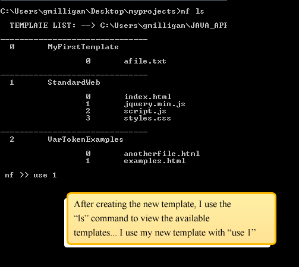
Notice the resulting folder structure for the project that was created: I used the filename token type to position each of my files exactly where they should go within my project. With Newfiles, you have precise control over the structure of your boiler-plate projects.
Demo two methods to change project file names
The previous "StandardWeb" template only used one of the three methods for controlling file names; each template file kept the same name when the project was created. For example, in index.html, filename:l:[folder]:. The dot, '.' tells Newfiles to use index.html as the project-file's name (keep it the same).
However, you do NOT always have to use the template file name as the project file name; there are two different ways to change the project file names, which weren't yet demonstrated:
- String literal. You can write the file name into the filename token. To do this, just surround the file name in quotes. The quotes make sure Newfiles views the written text as a string literal.
- Token example: filename:n:some/path:"my-file-name"
- User input. You can set the file name by entering into the command line console when you are building a project. If you do NOT use quotes, then Newfiles will ask you to input a file name value instead of treating the name as a string literal, eg: Enter --> "my-file-name" >> .
- Token example: filename:n:some/path:my-file-name
- Dot. This method was already demonstrated. A dot will tell Newfiles to keep the file name the same.
- Token example: filename:n:some/path:.
Let's demonstrate the User input method first. To do this, just create a new file inside your "StandardWeb" template called filenamedemo.txt:
filename:l:[folder]:my-file-name
var:n:project folder => [folder]
This template file demonstrates different methods for setting project file names.
After you create filenamedemo.txt, let's use the "StandardWeb" template again to see what happens this time:

You can see from this demonstration that the .txt file name will come from the user input that you enter into the command line. Now, let's demonstrate what happens if the same template file uses a string literal...
You will need to update filenamedemo.txt so that my-file-name is in quotes (that's the only update):
filename:l:[folder]:"my-file-name"
var:n:project folder => [folder]
This template file demonstrates different methods for setting project file names.
After you update filenamedemo.txt, let's use the "StandardWeb" template again to see what happens this time:

As you see in this demo, "my-file-name.txt" is the name of the project file. You do not have to enter this name into the command line because it's already a hard-coded string literal (surrounded by quotes) inside the template file.
There is one more scenario that hasn't been demonstrated yet... Let's say I want to use the [folder] as part of the name, similar to the way [folder] is being used in the folder path. This is possible; you can use aliases inside a string literal file name:
filename:l:[folder]:"test_[folder]"
var:n:project folder => [folder]
This template file demonstrates different methods for setting project file names.
After you update filenamedemo.txt, let's use the "StandardWeb" template again to see what happens this time:
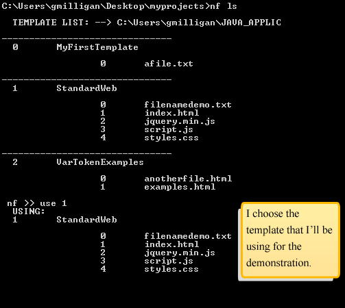
Why isn't the file name, test_AliasNameTest.txt all lowercase? The filename token uses the letter "l" to make sure it's lowercase right? Yes. However, the token alias that's being used inside the literal name, "test_[folder]" has a normal "n" casing. The casing of the alias will hold true, even when it's used inside of a file name that has a different casing. If we wanted to make sure that the file name is entirely lowercase, we could also set the casing of the [folder] alias to lowercase by using "l" inside the "project folder" token, instead of "n".
It's important to note that the casing for any filename token is ignored when the token has a string literal name. String literals are hard-coded so what you see is what you get, including the casing, regardless of the token's casing. If you have quotes around the file name, you can be sure that the token's casing WILL BE IGNORED; the literal name is used as it appears.
Now that we've finished demonstrating the different types of filename tokens, delete the filenamedemo.txt file from the "StandardWeb" template. It won't be useful anymore in future demonstrations.
Checkpoint -- What you learned:
- You have three template files named myFile.php, myFile.sql, and myFile.cpp. What token syntax can be used, in each of the three files, to make sure each project file name is the same as the template file name, when you build the project?
- You have a template file named myFile.php. From this file, can you build a project file with a different file extension, like .html? What would you have to do to the template file to accomplish this extension change?
- You have a template file named myFile.aspx. What token syntax could you use, inside the template file, to make sure that newName.aspx is the name of this project file?
- You have a template file named someName.htm. What token syntax could you use, inside the template file, to make sure that the project file was renamed to whatever the user types into the command line? How could you modify this token so that the project file name is always uppercase?
- What is a string literal? How is a string literal written (what makes it a string literal)?
- Consider this token inside a template file called, myFile.css: filename:l:"MY-FILE-NAME". What will this file name be in a new project?
- What token would you use inside a template file called myFile.phtml to make sure the project file's path is some/custom/path/myFile.phtml?
- Consider a template file that contains a token: var:l:project folder => [folder]. What additional token could you added to make sure that the project file was put under a folder, named as whatever the user enters for the "project folder" token value?
- Consider a template file that contains a token: var:l:project file => [file]. What additional token could you added to make sure that the project file was is named as whatever the user enters for the "project file" token value?
Commenting out template folders and files
Hide folders from the template list
You may create a template that you no longer want to see in your template list. You may want to hide it from Newfiles without removing it. This type of ability is called "commenting out"; you don't want to see it, but you don't want to delete it.
It's easy to comment out templates. All you have to do is place an underscore before the folder name and Newfiles will ignore this template folder. Let's try it:
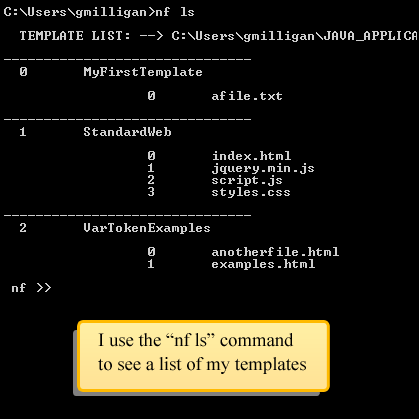
Commenting out templates is useful if you want to hide certain templates that you don't use very often, but you may want to uncomment and use in the future.
It's also possible to comment out individual files by using the same technique; any file name that begins with an underscore will also be commented out (just like a template folder). Let's try it...
In this example, we'll comment out anotherfile.html in the "VarTokenExamples" template:
Great. Now you know how to comment out both template files and template folders. If you want to uncomment, then just remove the underscore from the front of the name. This will reveal the file or folder, to Newfiles, once again.
Checkpoint -- What you learned:
- Let's say you've created a template that you use for building wordpress plugin projects... It's been a long time since you've needed to create a wordpress plugin and you've moved to working with other platforms. However, you think you may create more wordpress plugins in the future, but in the meantime, you want to hide your wordpress plugin template. How can you do this?
- Let's say you've created a useful template that helps you start new Magento extension projects... you have a config.xml file inside the template, but lately you've written a different version of this template file. You still want to save the old config.xml version (in case you need it in the future), but for now, you want to hide it from Newfiles. How can you do this?
Non-text-based template files
Image template file demo
So far, we've only demonstrated using text-based template files. The method for setting the file name and path for a project file, is to write a filename token into the template file... but this isn't possible for non-text files (such as images). For example, you can't write the text, filename:l:img:. into an image file so that the file is placed under an "img" folder when a project is created.
Let's say that you wanted to include a company logo image into our "StandardWeb" template. Every time you create a new project from the "StandardWeb" template, the project should already have our company logo image under an "img" parent folder. How can you do this?
Before we learn how to control the placement of non-text-based files, let's see what would happen if we included our logo into the "StandardWeb" template:
- Copy this image into your "StandardWeb" template folder:
- Add img src="img/company_logo.jpg" alt="company-logo" / to your content in templates/StandardWeb/index.html...
filename:l:[folder]:.
var:n:project folder => [folder]
var:c:project name => [Project]
html
head
title[Project]/title
link type="text/css" rel="stylesheet" href="css/styles.css" /
script type="text/javascript" src="js/jquery.min.js"/script
script type="text/javascript" src="js/script.js"/script
/head
body
img src="img/company_logo.jpg" alt="company-logo" /
h1 class="main-title"[Project]/h1
!-- your content here --
/body
/html
Once you've added img src="img/company_logo.jpg" alt="company-logo" / (line 13) to your template file, you can try and build a new project from your "StandardWeb" template. You can probably predict that the company_logo.jpg will NOT be put into the correct place. Let's see:

By default, Newfiles will place a file in the root folder of your project (unless you tell Newfiles to place the file in a different location with a filename token). In the previous demo, we included an image, company_logo.jpg. We want the image to be placed under an "img" folder, but we can't use a token to tell Newfiles where to put the image; we can't write filename:l:img:. inside the image file because it's obviously NOT text-based. We need a different way to tell Newfiles where to put company_logo.jpg.
How to generate the _filenames.xml special file
Newfiles allows you to control the placement of even non-text-based files in your projects by using the special _filenames.xml file. You don't have to write _filenames.xml yourself. Instead it's easier to create it automatically, via the filenames command. Let's try it:
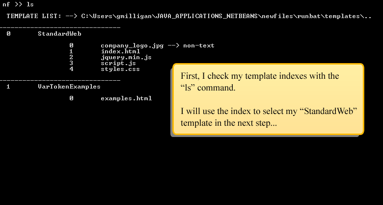
The filenames command is similar to the use command in that a template index must be specified after the command. In the previous example, I typed filenames 0 to select my "StandardWeb" template at index number 0.
What does _filenames.xml contain in this example? If you look at your own file, you will see a lot of included documentation comments. However, if you ignore the extra comments, the basic XML content would be as follows:
<?xml version="1.0" encoding="UTF-8" standalone="no"?>
filenames
filename for="company_logo.jpg"/filename
filename for="index.html"/filename
filename for="jquery.min.js"/filename
filename for="script.js"/filename
filename for="styles.css"/filename
/filenames
Notice that Newfiles added a filename XML node to represent each of the file names inside your template. Keep this in mind; we will talk more about this shortly.
What does the filenames command do?
- Create/update _filenames.xml: The _filenames.xml file is created or updated. Newfiles will make sure each of your template file names are represented inside _filenames.xml. If a file name is represented inside _filenames.xml, which is no longer in your template, then Newfiles will remove the name from _filenames.xml. Newfiles will make sure that _filenames.xml is up-to-date so you don't have to.
- List a template's filenames: A list of filename definitions (defined in either _filenames.xml OR by filename tokens) will be displayed in your command console. This makes the filenames command useful for checking filename definitions for each file inside a template.
How to use _filenames.xml
What's the purpose of _filenames.xml inside of a template? You may be able to guess; the purpose of _filenames.xml is to provide an alternate way to control file names and paths (besides using a filename token). You are allowed to control text-based file names and paths with _filenames.xml, but it's the only way to control non-text-based file names and paths... since you can't write tokens into a file that's not text-based.
For example, in my "StandardWeb" template, I can make sure company_logo.jpg is placed under a "img" project folder, by modifying the _filenames.xml file:
<?xml version="1.0" encoding="UTF-8" standalone="no"?>
filenames
filename for="company_logo.jpg"n:img:./filename
filename for="index.html"/filename
filename for="jquery.min.js"/filename
filename for="script.js"/filename
filename for="styles.css"/filename
/filenames
On line 3,
filename for="company_logo.jpg"n:img:./filename
tells Newfiles to place the company_logo.jpg under an "img" folder. A dot tells Newfiles NOT to change the company_logo.jpg name. The letter 'n' specifies normal casing for the filename. Do you recognize this syntax? This is the same as writing the token, filename:n:img:.
Notice how the other filename nodes are empty. filename for="company_logo.jpg" is the only filename that has content. That's alright. You can leave these other nodes empty. If a filename node is empty, Newfiles will ignore it so that it doesn't interfere with the filename token defintition (if there is such a token definition).
What happens if a filename definition, for one file, is set BOTH in _filenames.xml AND by a filename token? In this case, Newfiles would ignore the token and only use the definition in _filenames.xml.
Alright. After you add the filename defintion for the company_logo.jpg file (line 3), let's see what happens when building another project. If you have been paying close attention, you may guess that company_logo.jpg will be placed in the wrong path again:
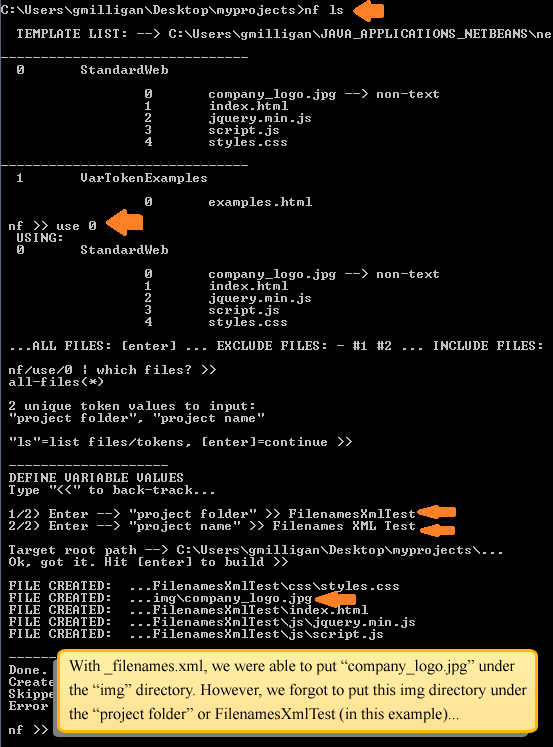
Although we were successful in placing the "company_logo.jpg" file under an "img" folder, we failed to put this "img" folder under the correct project folder. In this case, the project folder was "FilenamesXmlTest"; we defined this folder name, in the command line console, while using our "StandardWeb" template.
How to use tokens inside _filenames.xml
How can we change our template so that "company_logo.jpg" will have the correct folder path, "project folder/img/company_logo.jpg"? You probably guessed that we must be able to use tokens, such as var:n:project folder => [folder] inside _filenames.xml. Yes:
<?xml version="1.0" encoding="UTF-8" standalone="no"?>
filenames
<!--
var:n:project folder => [folder]
-->
filename for="company_logo.jpg"n:[folder]/img:./filename
filename for="index.html"/filename
filename for="jquery.min.js"/filename
filename for="script.js"/filename
filename for="styles.css"/filename
/filenames
Modify _filenames.xml to include the "project folder" token. Notice that I wrap this token inside XML comment tags: !-- -- (lines 3 and 5). I use these XML comment tags so that _filenames.xml can pass as a valid XML document. Otherwise, my uncommented token var:n:project folder => [folder] would confuse XML validators / parsors.
On line 6, you can see that I use my token alias value as part of my folder path for the "company_logo.jpg" file. Now when I build a project with this template, "company_logo.jpg" will be placed in the correct folder:
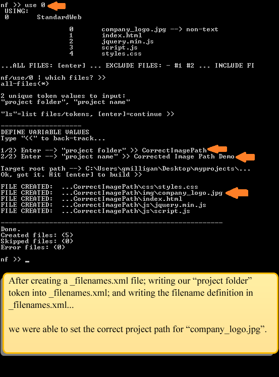
Checkpoint -- What you learned:
- What is the special file, "_filenames.xml" and how can you use it to replace filename tokens?
- Let's say you have a template that doesn't already have a "_filenames.xml" file. You want to add "_filenames.xml" to the template. You type the command, nf ls and find out that your template is at index #4. What command can you use to quickly generate "_filenames.xml" for this template (so you NEVER have to create "_filenames.xml" from scratch)?
- Let's say you add three new files to a template, (at index #2) then remove two of the files from this same template. This template already has a "_filenames.xml" file. What command can you type to automatically update the list in "_filenames.xml" for this template at index #2?
- Imagine a template file called "file.php" that contains this token: filename:n:"somename" => [Name]. Imagine that this file's template also contains filename for="file.php"n:"othername"/filename in "_filenames.xml". When you build a project, what will the new name be for this "file.php" template file?
- Imagine a template file called "file.html" that contains this token: filename:n:"yourname" => [Name]. Imagine that this file's template also contains filename for="file.php"/filename in "_filenames.xml". When you build a project, what will the new name be for this "file.html" template file?
- Can you use tokens inside "_filenames.xml"? In what scenario would you have to use one or more tokens inside "_filenames.xml"?
- Let's say you are confused about where your template's file paths are being defined... you know file paths can be defined by either a token or inside "_filenames.xml". Is there a way to quickly view a list of ALL of these definitions at once? What is it?
Exporting projects
What is exporting and when is it useful?
Imagine you've created a project whose files are meshed into the file-system of a larger application. For example, your project is a Magento extension.
Magento is an ecommerce platform that has a fairly expansive collection of files that are distributed under different directories throughout its file system tree. Although all of your project's files SHOULD be packaged together, they are instead spread out in various places within the Magento file structure. Now that you are done developing and testing your new extension, you are ready to package your extension so that you can distribute it to other Magento sites. In order to do this, you have to sift through the Magento tree structure and copy all of your project's files into a single directory. Newfiles provides an export feature to help make this task easier.
An example of a "scattered" project structure
To summarize, the types of projects that benefit from the export feature have the following characteristic:
- The project files are scattered; the project is only functional when its files are distributed throughout multiple folders in a larger system. In this case, exporting will automatically locate your scattered project files and arrange them for you into a single package folder, for re-distribution.
What will a "scattered" project look like? Here is one such example of a "scattered" structure, based off of Magento v1.X's style of organization... this example features a Magento extension made by "MyCompany", called "MyExtension". The project files are highlighted with an arrow:
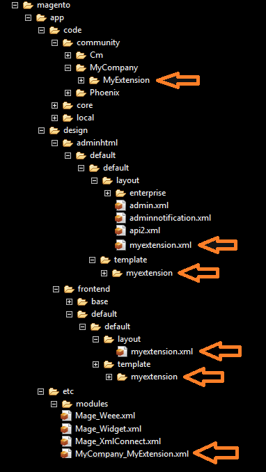
In this example, you can see that your project files are distributed across multiple locations. This example doesn't even show ALL locations. If you wanted to package this project, for re-distribution, you could search for each one and copy it into a new folder.
Newfiles doesn't want you to waste time doing such tedious tasks.
How does Newfiles know which files to export?
The scattered project from the previous example was created from a template that I have called "MageStarterKit" (created by my friend and co-worker, Dan Hakimzadeh). When I created my "MageStarterKit" project, I used the following values:
1/4) Enter --> "module prefix" >> MyCompany
2/4) Enter --> "module name" >> MyExtension
3/4) Enter --> "code pool" >> community
4/4) Enter --> "extension version" >> 0.1.0
Important note, three of the four input values helped determine some folder locations, ie: "module prefix", "module name", and "code pool". These three values help distinguish the unique placement of my project files within the file-system. Therefore, Newfiles will know where to find all of this project's files as long as it knows these three key values:
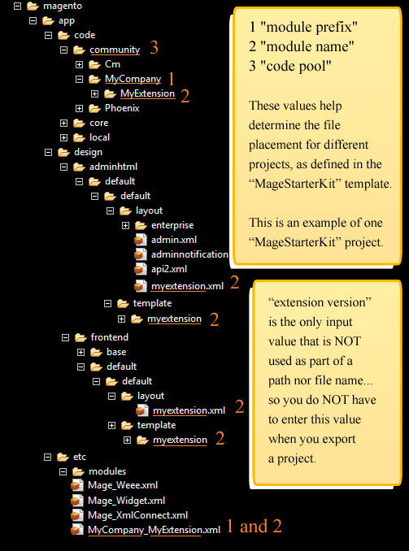
It's important to note these three key input values, and WHY they are key; Newfiles needs to know these values in order to determine which files to include into the export.
Reminder: How are the key values defined in the template?
Remember, I can see a list of filename definitions with the nf filenames {index} console command, eg: nf filenames 0. When I enter this command, I see the following filename definitions inside "MageStarterKit". Notice the token aliases in these definitions. [codepool], [Prefix], and [Module], respectively represent or key token values, "code pool", "module prefix", and "module name":
filename:l:app/code/[codepool]/[Prefix]/[Module]/Block/Adminhtml/System/Config/Fieldset:"Hint"
filename:c:app/code/[codepool]/[Prefix]/[Module]/Block:"SampleBlock"
filename:c:app/code/[codepool]/[Prefix]/[Module]/controllers/Adminhtml:"IndexController"
filename:c:app/code/[codepool]/[Prefix]/[Module]/controllers:"IndexController"
filename:l:app/code/[codepool]/[Prefix]/[Module]/etc:"adminhtml"
filename:l:app/code/[codepool]/[Prefix]/[Module]/etc:"config"
filename:l:app/code/[codepool]/[Prefix]/[Module]/etc:"system"
filename:c:app/code/[codepool]/[Prefix]/[Module]/Helper:"Data"
filename:c:app/code/[codepool]/[Prefix]/[Module]/Helper:"SampleHelper"
filename:c:app/code/[codepool]/[Prefix]/[Module]/Model:"SampleModel"
filename:c:app/code/[codepool]/[Prefix]/[Module]/Model/System/Config/Source:"Example"
filename:l:app/design/adminhtml/default/default/layout/:"[module]"
filename:l:app/design/adminhtml/default/default/template/[module]/system/config/fieldset:"hint"
filename:l:app/design/frontend/default/default/layout/:"[module]"
filename:l:app/design/frontend/default/default/template/[module]:"example"
filename:l:app/etc/modules/:"[Prefix]_[Module]"
filename:l:app/locale/en_US:"[Prefix]_[Module]"
filename:l:skin/adminhtml/default/default/[module]:. --> _filenames.xml
As you already know, each filename definition tells one "MageStarterKit" file where to go when a project is created. There are 18 definitions; one definition per "MageStarterKit" file. You should already be familiar with where these definitions could be written in the "MageStarterKit" template.
Important note: Newfiles will NOT know to export project files that do NOT have a filename definition somewhere in the template. For example, if you create a project then add additional project files (outside of the template definitions) then these additional project files will NOT be exported.
Export demonstration
The Magento module, "MyExtension", from the previous examples will be exported for this demonstration:
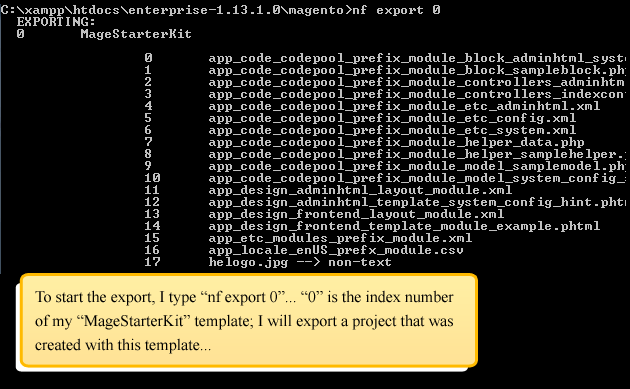
Try your own export
If you need more practice, choose one of the example templates, like "StandardWeb", "VarTokenExamples", or any other template that you've crerated. Try exporting this template.
Checkpoint -- What you learned:
- Let's say you are ready to re-distribute your finished project to other environments. For what type of project would the Newfiles export feature be useful?
- What's the difference between a project that has "scattered" files versus one that does not? Basically, what does "scattered" mean in this context?
- We discussed Magento extensions as being "scattered". Can you think of another non-Magento type of project that could be considered "scattered"?
- Consider a project with one file. The tokens in this file are filename:l:[folder]:., var:n:project folder=>[folder], and var:c:project name=>[Project]. Which token value(s) will you have to enter when you export a project that was made from this template? Explain why.
- Consider a project that was based off a Newfiles template. Let's say you create a new project file, but you do NOT modify the Newfiles template. When you export the project, will the new file be included in the export? Why not?
The end... for now...
You have officially reached the end of this documentation. Good job. Expect to see more documentation with updates and enhancements to the Newfiles application. excelsior!!!